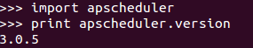
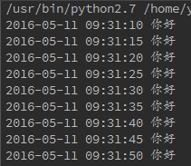
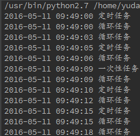
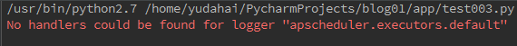
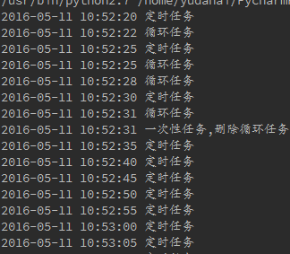
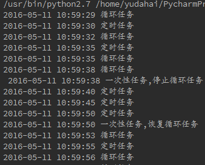
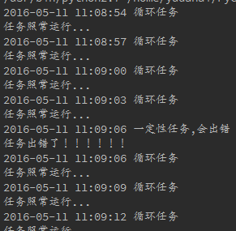

apscheduler的使用
最近一个程序要用到后台定时任务，看了看python后台任务，一般2个选择，一个是apscheduler，一个celery。 apscheduler比较直观简单一点，就选说说这个库吧。网上一搜索，晕死，好多写apscheduler的都是超级老的版本，而且博客之间相互乱 抄，错误一大堆。还是自己读官方文档，为大家理一遍吧。
先安装一下吧，最新版本的apscheduler是3.0.5版
- 安装
pip install apscheduler

安装完毕
2. 简单任务
首先，来个最简单的例子，看看它的威力。
1 # coding:utf-8
2 from apscheduler.schedulers.blocking import BlockingScheduler
3 import datetime
4
5
6 def aps_test():
7 print datetime.datetime.now().strftime('%Y-%m-%d %H:%M:%S'), '你好'
8
9
10 scheduler = BlockingScheduler()
11 scheduler.add_job(func=aps_test, trigger='cron', second='*/5')
12 scheduler.start()
看代码，定义一个函数，然后定义一个scheduler类型，添加一个job，然后执行，就可以了，代码是不是超级简单，而且非常清晰。看看结果吧。

5秒整倍数，就执行这个函数，是不是超级超级简单？对了，apscheduler就是通俗易懂。
再写一个带参数的。
1 # coding:utf-8
2 from apscheduler.schedulers.blocking import BlockingScheduler
3 import datetime
4
5
6 def aps_test(x):
7 print datetime.datetime.now().strftime('%Y-%m-%d %H:%M:%S'), x
8
9 scheduler = BlockingScheduler()
10 scheduler.add_job(func=aps_test, args=('你好',), trigger='cron', second='*/5')
11 scheduler.start()
结果跟上面一样的。
好了，上面只是给大家看的小例子，我们先从头到位梳理一遍吧。apscheduler分为4个模块，分别是Triggers，Job stores，Executors，Schedulers.从上面的例子我们就可以看出来了，triggers就是触发器，上面的代码中，用了cron， 其实还有其他触发器，看看它的源码解释。
The ``trigger`` argument can either be:
#. the alias name of the trigger (e.g. ``date``, ``interval`` or ``cron``), in which case any extra keyword
arguments to this method are passed on to the trigger's constructor
#. an instance of a trigger class
看见没有，源码中解释说，有date, interval, cron可供选择，其实看字面意思也可以知道，date表示具体的一次性任务，interval表示循环任务，cron表示定时任务，好了，分别写个代码看看效果最明显。
1 # coding:utf-8
2 from apscheduler.schedulers.blocking import BlockingScheduler
3 import datetime
4
5
6 def aps_test(x):
7 print datetime.datetime.now().strftime('%Y-%m-%d %H:%M:%S'), x
8
9 scheduler = BlockingScheduler()
10 scheduler.add_job(func=aps_test, args=('定时任务',), trigger='cron', second='*/5')
11 scheduler.add_job(func=aps_test, args=('一次性任务',), next_run_time=datetime.datetime.now() + datetime.timedelta(seconds=12))
12 scheduler.add_job(func=aps_test, args=('循环任务',), trigger='interval', seconds=3)
13
14 scheduler.start()
看看结果

其实应该不用我解释代码，大家也可以看出结果了，非常清晰。除了一次性任务，trigger是不要写的，直接定义next_run_time就可以了，关于date这部分，官网没有解释，但是去看看源码吧，看这行代码。
1 def _create_trigger(self, trigger, trigger_args):
2 if isinstance(trigger, BaseTrigger):
3 return trigger
4 elif trigger is None:
5 trigger = 'date'
6 elif not isinstance(trigger, six.string_types):
7 raise TypeError('Expected a trigger instance or string, got %s instead' % trigger.__class__.__name__)
8
9 # Use the scheduler's time zone if nothing else is specified
10 trigger_args.setdefault('timezone', self.timezone)
11
12 # Instantiate the trigger class
13 return self._create_plugin_instance('trigger', trigger, trigger_args)
第4行，如果trigger为None，直接定义trigger为'date'类型。其实弄到这里，大家应该自己拓展一下，如果实现web的异步任务。假设接到一个移动端任务，任务完成后，发送一个推送到移动端，用date类型的trigger完成可以做的很好。
3.日志
好了，scheduler的基本应用，我想大家已经会了，但这仅仅只是开始。如果代码有意外咋办？会阻断整个任务吗？如果我要计算密集型的任务咋办？下面有个代码，我们看看会发生什么情况。
1 # coding:utf-8
2 from apscheduler.schedulers.blocking import BlockingScheduler
3 import datetime
4
5
6 def aps_test(x):
7 print 1/0
8 print datetime.datetime.now().strftime('%Y-%m-%d %H:%M:%S'), x
9
10 scheduler = BlockingScheduler()
11 scheduler.add_job(func=aps_test, args=('定时任务',), trigger='cron', second='*/5')
12
13 scheduler.start()
还是上面代码，但我们中间故意加了个错误，看看会发生什么情况。

说我们没有log文件，好吧，我们添加一个log文件，看看写的什么。
1 # coding:utf-8
2 from apscheduler.schedulers.blocking import BlockingScheduler
3 import datetime
4 import logging
5
6 logging.basicConfig(level=logging.INFO,
7 format='%(asctime)s %(filename)s[line:%(lineno)d] %(levelname)s %(message)s',
8 datefmt='%Y-%m-%d %H:%M:%S',
9 filename='log1.txt',
10 filemode='a')
11
12
13 def aps_test(x):
14 print 1/0
15 print datetime.datetime.now().strftime('%Y-%m-%d %H:%M:%S'), x
16
17 scheduler = BlockingScheduler()
18 scheduler.add_job(func=aps_test, args=('定时任务',), trigger='cron', second='*/5')
19 scheduler._logger = logging
20 scheduler.start()
终于可以看到了，这时候才看到错误，这个是一定要注意的。
其实，到这里，完全可以执行大多数任务了，但我们为了效率，安全性，再往下面看看，还有什么。
4.删除任务
假设我们有个奇葩任务，要求执行一定阶段任务以后，删除某一个循环任务，其他任务照常进行。有如下代码：
1 # coding:utf-8
2 from apscheduler.schedulers.blocking import BlockingScheduler
3 import datetime
4 import logging
5
6 logging.basicConfig(level=logging.INFO,
7 format='%(asctime)s %(filename)s[line:%(lineno)d] %(levelname)s %(message)s',
8 datefmt='%Y-%m-%d %H:%M:%S',
9 filename='log1.txt',
10 filemode='a')
11
12
13 def aps_test(x):
14 print datetime.datetime.now().strftime('%Y-%m-%d %H:%M:%S'), x
15
16
17 def aps_date(x):
18 scheduler.remove_job('interval_task')
19 print datetime.datetime.now().strftime('%Y-%m-%d %H:%M:%S'), x
20
21
22 scheduler = BlockingScheduler()
23 scheduler.add_job(func=aps_test, args=('定时任务',), trigger='cron', second='*/5', id='cron_task')
24 scheduler.add_job(func=aps_date, args=('一次性任务,删除循环任务',), next_run_time=datetime.datetime.now() + datetime.timedelta(seconds=12), id='date_task')
25 scheduler.add_job(func=aps_test, args=('循环任务',), trigger='interval', seconds=3, id='interval_task')
26 scheduler._logger = logging
27
28 scheduler.start()
看看结果，

在运行过程中，成功删除某一个任务，其实就是为每个任务定义一个id，然后remove_job这个id，是不是超级简单，直观？那还有什么呢？
5.停止任务，恢复任务
看看官方文档，还有pause_job, resume_job，用法跟remove_job一样，这边就不详细介绍了，就写个代码。
1 # coding:utf-8
2 from apscheduler.schedulers.blocking import BlockingScheduler
3 import datetime
4 import logging
5
6 logging.basicConfig(level=logging.INFO,
7 format='%(asctime)s %(filename)s[line:%(lineno)d] %(levelname)s %(message)s',
8 datefmt='%Y-%m-%d %H:%M:%S',
9 filename='log1.txt',
10 filemode='a')
11
12
13 def aps_test(x):
14 print datetime.datetime.now().strftime('%Y-%m-%d %H:%M:%S'), x
15
16
17 def aps_pause(x):
18 scheduler.pause_job('interval_task')
19 print datetime.datetime.now().strftime('%Y-%m-%d %H:%M:%S'), x
20
21
22 def aps_resume(x):
23 scheduler.resume_job('interval_task')
24 print datetime.datetime.now().strftime('%Y-%m-%d %H:%M:%S'), x
25
26 scheduler = BlockingScheduler()
27 scheduler.add_job(func=aps_test, args=('定时任务',), trigger='cron', second='*/5', id='cron_task')
28 scheduler.add_job(func=aps_pause, args=('一次性任务,停止循环任务',), next_run_time=datetime.datetime.now() + datetime.timedelta(seconds=12), id='pause_task')
29 scheduler.add_job(func=aps_resume, args=('一次性任务,恢复循环任务',), next_run_time=datetime.datetime.now() + datetime.timedelta(seconds=24), id='resume_task')
30 scheduler.add_job(func=aps_test, args=('循环任务',), trigger='interval', seconds=3, id='interval_task')
31 scheduler._logger = logging
32
33 scheduler.start()
看看结果

是不是很容易？好了，删除任务，停止任务，恢复任务就介绍到这，下面我们看看监听任务。
6.意外
任何代码都可能发生意外，关键是，发生意外了，如何第一时间知道，这才是公司最关心的，apscheduler已经为我们想到了这些。
看下面的代码，
1 # coding:utf-8
2 from apscheduler.schedulers.blocking import BlockingScheduler
3 from apscheduler.events import EVENT_JOB_EXECUTED, EVENT_JOB_ERROR
4 import datetime
5 import logging
6
7 logging.basicConfig(level=logging.INFO,
8 format='%(asctime)s %(filename)s[line:%(lineno)d] %(levelname)s %(message)s',
9 datefmt='%Y-%m-%d %H:%M:%S',
10 filename='log1.txt',
11 filemode='a')
12
13
14 def aps_test(x):
15 print datetime.datetime.now().strftime('%Y-%m-%d %H:%M:%S'), x
16
17
18 def date_test(x):
19 print datetime.datetime.now().strftime('%Y-%m-%d %H:%M:%S'), x
20 print 1/0
21
22
23 def my_listener(event):
24 if event.exception:
25 print '任务出错了！！！！！！'
26 else:
27 print '任务照常运行...'
28
29 scheduler = BlockingScheduler()
30 scheduler.add_job(func=date_test, args=('一定性任务,会出错',), next_run_time=datetime.datetime.now() + datetime.timedelta(seconds=15), id='date_task')
31 scheduler.add_job(func=aps_test, args=('循环任务',), trigger='interval', seconds=3, id='interval_task')
32 scheduler.add_listener(my_listener, EVENT_JOB_EXECUTED | EVENT_JOB_ERROR)
33 scheduler._logger = logging
34
35 scheduler.start()
看看结果

是不是很直观，在生产环境中，你可以把出错信息换成发送一封邮件或者发送一个短信，这样定时任务出错就可以立马就知道了。
好了，今天就讲到这，以后我们有机会再来拓展这个apscheduler，这个非常强大而且直观的后台任务库。